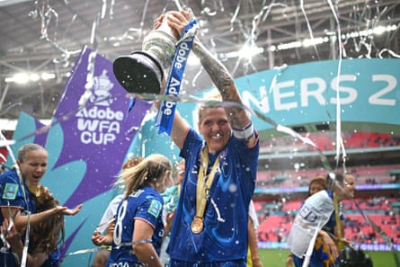
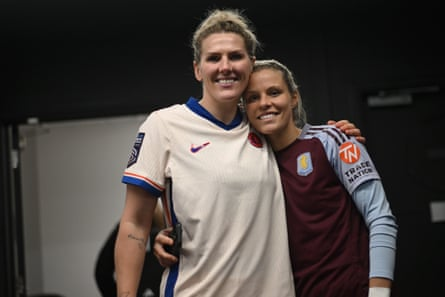

“There’s more than just England under consideration when it came to that decision,” said Millie Bright on stepping away from the Lionesses ahead of their European title defence. “There’s me being able to walk down the stairs after I’ve played 90 minutes of football, there’s me in the future when I have children being able to walk around properly, being able to bend down and pick up toys, there’s me being able to do normal life things like put on socks without being in pain and, for the first time in a long time, I genuinely didn’t think about the response of the public because that just wasn’t a priority.”
Chelsea’s Bright was discussing her decision to step back from this summer’s Euros for her mental and physical health with the former England international and close friend Rachel Daly. The pair have recently launched a podcast that leans into the chemistry they have as friends.
“For the first time in a long time I’m not thinking about anyone else,” continued Bright. “I’m actually thinking about myself and, to be honest, it sounds savage, I wasn’t really bothered how the public would react. When you’re in the spotlight sometimes you make decisions that are best for the people around you and in this situation it was a decision purely based on what’s best for Millie: what’s best for my mind, what’s best for my mental health and what’s best for my knee. I needed to get that surgery and I have to think about my longevity too and I have to think about competing next season for Chelsea in a jam-packed squad where my position could quite easily be taken away.
Millie Bright made 36 appearances for Chelsea last season which culminated in the FA Cup victory that sealed a domestic treble.Photograph: Harriet Lander/Chelsea FC/Getty Images
“I’m really grateful for the response and everyone that has said how brave it was and that it’s allowed people to take a little bit of confidence for if they need to make that decision,” she said. “As an athlete, first and foremost you are a human, you’re not an object. We’re not indestructible, we do break, our minds break, our bodies break, and I had to make a decision that was best for me in that moment.”
Bright did not feel able to compete at her best and she felt there were others that could. “There were other players that were 100% available mentally and physically,” she said, “and they deserve to be at the tournament over someone that potentially can’t give 50%, let alone 100%. I’m feeling good, though. I feel like I’ve really taken time to just focus on myself and the surgery went well. It was definitely a surgery that was needed, and I feel better in my mind and I’m ready to support the girls.”
Bright’s unavailability for England is temporary. Daly, meanwhile, knows what it is like to step away for good, the Aston Villa forward having retired from international football in April 2024 .
“It’s only been a year so I’ve only been away for a small number of international windows, particularly with no major tournament for England last summer, but being able to shut off mentally, having that switch off, but also being able to focus on individual sessions more specific to you with your club, is really refreshing,” she said. “For me though, the most important thing is being able to spend time with my family, being able to do things that I never was able to do during my time as an international player. I can’t take anything away from it, I’m beyond eternally grateful for my career with England, but I think all footballers will say when they know it’s time, they know it’s time, and I was happy to pass on that baton. You see people like Aggie [Beever-Jones] absolutely thriving in there now and it gives me joy to be able to watch her succeed.”
Daly and Bright met around 15 years ago, in an England camp in Spain. They do not remember how they became close friends, it just happened. “We always say that it’s because we’re both from Yorkshire, there’s like a northern soul connection there,” said Daly. “I heard you, you heard me and we were just like: all right, mate, let’s be friends. And then we literally never left each other’s side after that, did we?”
Millie Bright (left) with Rachel Daly following the Women’s Super League match between Aston Villa and Chelsea in February 2025.Photograph: Harriet Lander/Chelsea FC/Getty Images
“No,” replied Bright. “We just got on like a house on fire. You know when you just understand someone and they understand you, without having to explain? We just get each other. It’s just simple.” Their joint clothing venture, Daly Brightness, didn’t quite take off but they knew they were on to something with the name, they knew they would do something with it, that there would be a Daly Brightness 2.0, then came the podcast.
“One rule we had was it had to be raw,” said Bright. “Yes, there’s always going to be a football element, that’s how our friendship started, that’s our careers, that’s what we do, but for us the most important side was the rawness of me and Rach as people. We lift trophies, we win, we have these really nice lives, but we still go through a lot of shit and we still go through the highs and lows that every other human being goes through in the world, no matter what walk of life you’re taking,
“I think sometimes the outside world can just think that we live these luxury lives and we’re fine and we should tolerate all the shit that’s thrown at us. But we don’t have armour, my skin is the same as anyone else’s skin, if you cut me I bleed like you, if you say things to me, eventually it’s going to kind of take its toll, so we really wanted to give a glimpse into that side of our lives. That’s the beauty of the podcast: there’s a fun element, there’s a therapy element, there’s a football element, then there’s the questions people ask and it has no filter.”
It is, ultimately, a way to give something back to fans, something that has become harder and harder to do as the game has grown. In the early days of social media, players could interact there, in the early days of the game’s growth, they could sign every autograph pitchside. Now, crowds are too big to do that and social media is too toxic a place to delve.
“We’ve always been the type of people that want to connect with fans,” Daly said. “It’s very difficult after games to get around all the fans. There is still a high expectation of people in the women’s games that you should stay behind and sign something for every single person. You can’t do that. We haven’t got the capacity to do that. Meanwhile, social media, I absolutely despise it, and I know Millie does too. If we didn’t have to use it for work I don’t think any of us would be using it right now, so it’s nice to be able to engage with fans and give back to them in a different way.”
Rachel Daly and Millie Bright celebrate during the England women’s team celebration at Trafalgar Square after England’s Euro 2022 victory.Photograph: Lynne Cameron/The FA/Getty Images
Is watching the Euros difficult? Is there a fear of missing out? “It hasn’t been difficult for me up to this point,” said Daly. “Now I’m seeing all the Euros hype and it’s bringing back nostalgic memories from when I was there in 2022 and this is the first time where I’ve probably felt a bit like: ‘Oh, I miss that.’ Equally, it’s not coming from a place of envy. I’m just excited to be a fan and watch and see how well they do and obviously wish them all luck in the world. I hope they bring that bloody thing home.”
Bright admitted she feels similarly. “I’m really excited to watch it from a fan’s perspective,” she said. “As players, we never get to experience that. I’ll be honest, I’ve not really been thinking of anything other than just getting back to 100% mentally and physically, but when you start seeing the girls are flying out to Switzerland and all that side of it brings back the memories and you’re like: ‘Oh God, I wish I was there.’ But because I’m so drilled into myself and my mental state and my physical state I’m just really proud to be watching the girls and supporting them.”
- The Rest Is Football: Daly Brightness is available to listen to now .